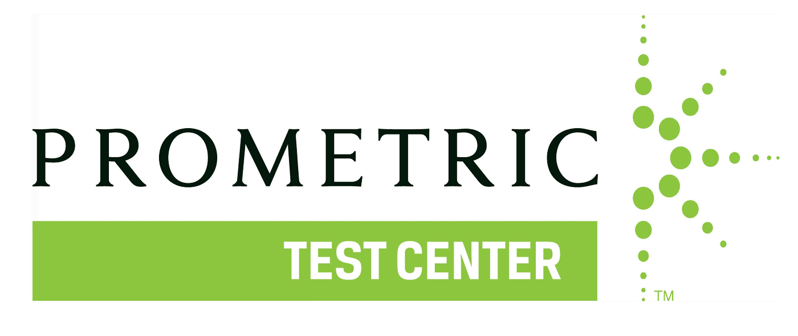
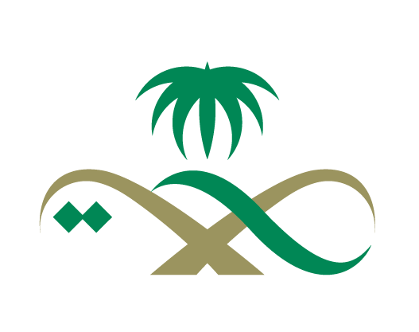

قبل التقديم معنا
خطوات عمل الداتافلو – ممارس بلس – البرومترك – اطباء و اطباء اسنان – السعودية
هل أنت طبيب وترغب في العمل بالمملكة العربية السعودية ؟
إذا كانت الإجابة نعم، فهناك مجموعة من الإجراءات الضرورية التي يجب اتباعها، مثل الداتافلو (DataFlow) بالاضافة
الى ذلك ممارس بلس (Mumaris Plus) واختبار الببرومترك prometric
هذه الخطوات تعد أساسية للحصول على ترخيص مزاولة مهنة الطبيب في السعودية في هذا الدليل الشامل، سنشرح لك
بالتفصيل كل خطوة وكيفية عملها بسهولة، وايضا مع تقديم أفضل النصائح لضمان النجاح باذن الله
انت
فى المكان الصحيح
الخطوات كالتالى بالترتيب
1
الداتافلو – اطياء و اسنان – السعودية
أولى خطوات الحصول على الترخيص السعودى عمل الداتا فلو وهى شركة عالميه مقرها دبي مختصه فى توثيق شهادات
الطبيب و التأكد من أن جميع الوثائق أصلية وصحيحة، مما يمنع أي تلاعب في البيانات كما سيأتى توضيحه والاوراق
المطلوبه له
2
ممارس بلس – اطياء و اسنان – السعودية
هي الخدمة الإلكترونية الرسمية التي تقدمها الهيئة السعودية للتخصصات الصحية (SCFHS) لجميع الممارسين الصحيين
في السعودية. تتيح هذه الخدمة إدارة جميع المعاملات المتعلقة بالتسجيل والتصنيف المهني داخل المملكة من خلال
عرض شهادات الطبيب على لجنة داخل الهيئة السعودية للتخصصات الصحية للنظر فى اعتماده من عدمه علاوة على ذلك يتم
اصدار رقم الاحقيه منه للدخول فى الامتحان المسمى بالبيرسون فيو
3
البرومترك – اطياء و اسنان – السعودية
وهو الامتحان الذي تعقده شركة البروميتريك بالتعاون مع الهيئه السعوديه للتخصصات الصحيه ويتم حجزه من خلال
شركة القاضي داتا فلو
4
التسجيل المهنى – اطياء و اسنان – السعودية
التسجيل المهنى يتم اصداره لك بعد دفع الرسوم المقرره لاصدار شهادة تسمى ب ( شهادة التسجيل المهني ) ولكنها
ساريه معك لمدة سنه خلالها بيتم الترخيص النهائي
5
اصدار الترخيص السعودى النهائي اطياء و اسنان
بعد السفر ان شاء الله واصدار الاقامة الخاصه بك يتم اصدار الترخيص النهائي ولا يتم ممارسة المهنة بدونه
مكان صورة رئيسية
بانر يختصر رحلة الترخيص الطبي
يفضل تصميم أفقي يوضح التسلسل: داتا فلو، ممارس بلس، برومترك، تسجيل مهني، وترخيص نهائي.
المقاس المقترح: 1600 × 700 px
النسبة: 16:7
الاستخدام: بعد خطوات البداية
أولا : الداتافلو
الاوراق المطلوبة للداتافلو – اطباء و اطباء اسنان – السعودية
- 1️⃣ جواز السفر
- 2️⃣ اخر شهادة علميه ( وبيان الدرجات للجامعات الخاصة فقط )
- 3️⃣ ترخيص مزاولة المهنه الصادر من وزارة الصحه
للاطلاع على كيفية اصداره وسعره وتفاصيله اضغط هنا
- 4️⃣ صورة شخصيه بخلفية بيضاء
- 5️⃣ صورة البطاقه وجه وظهر او ماتسمى بالهويه الوطنيه فى بلدك
- 6️⃣ ملئ نموذج ( طلب استخراج ترخيص ) سيتم ملئه لحضراتكم من طرفنا مجانا
💢 ملاحظات هامة :
⚠️ تم فرض رسوم اضافيه من كثير من الجامعات نظير التحقق من المؤهلات
والاعتراف بالشهادات الصادره منها …. ورسومها تتفاوت من جامعه الي اخري يتم افادة حضراتكم بها عند التقديم على حسب
كل جامعة
⚠️ وايضا تم فرض رسوم من وزارة الصحة المصريه والمجلس القومي السودانى للمهن الطبية والمجلس الطبي
اليمني نظير التحقق والرد علي صحة الترخيص .
🔸 يتم ارسال الشهادات بإحدى الصيغ الآتية : (pdf, .doc, .docx,
.png, .jpg, .jpeg, .gif)
الفترة الزمنية للانتهاء من الداتافلو
🔸 عادى
متوسط ظهور تقرير الداتافلو 5 اسابيع اول اقل
🔸 مستعجل
متوسط ظهور تقرير الداتافلو اسبوعين عمل او اقل
على العكس من ذلك احيانا يتاخر فى الحالتين نظرا
لمشاكل بعض الجامعات والصحة والنقابات
سعر الداتافلو – اطباء و اطباء اسنان – السعودية
يختلف سعر الداتافلو حسب الجامعة التى تخرجت منها لكن بشكل عام تتراوح من 500 ريال سعودى الى 1000 ريال سعودى
وبعض الجامعات تزيد عن ذلك
لمزيد من التفاصيل عن الداتافلو اضعط هنا
مكان صورة للمستندات
ملف أوراق الداتا فلو
تصميم يوضح الشهادات، الجواز، الترخيص، والصورة الشخصية في مشهد واحد.
المقاس المقترح: 1080 × 1080 px
النسبة: 1:1
مكان إنفوجرافيك
مدة وتكلفة الداتا فلو
تصميم مختصر يبرز الزمن المتوقع والتكلفة بشكل بصري واضح.
المقاس المقترح: 1080 × 1350 px
النسبة: 4:5

ثانيا : ممارس بلس
الاوراق المطلوبة لممارس بلس – اطباء و اطباء اسنان – السعودية
فى هذه الخطوة يتم اصدار رقم الاحقية للدخول فى الامتحان المسمى
بالبرومترك
- 1️⃣ بيان درجات للمؤهلات الحاصل عليها
- 2️⃣ صوره شخصيه بخلفية بيضاء
- 3️⃣ شهادة خبره حديثه
- 4️⃣ تقرير الداتا فلو
- 5️⃣ شهادة الامتياز
- 6️⃣ الماجيستير ( و – او ) الدكتوراه ان توفرت مع ارفاق بيان قيدها و درجاتها
- 7️⃣ شهادة الزماله ان وجدت مع ارفاق شهادة اكمال التدريب ومدة دراستها
- 8️⃣ هام جدا
هل سبق لك الامتحان قبل ذلك ؟
اذا امتحنت ارفق لنا مستند نجاحك
اذا لم تمتحن اخبرنا
- 🔸 اذا كان لديك حساب مارس بلس من قبل لابد ترسله لنا
الفترة الزمنية للانتهاء من ممارس بلس
تظهر نتيجة التصنيف ( ممارس بلس ) خلال يومين عمل تقل أو تزيد اعتمادا على رد الهيئه السعوديه للتخصصات الصحيه مع
الاخذ فى الاعتبار ان الهيئة بها اكثر من لجنه مراجعه للطلب
سعر ممارس بلس – اطباء و اطباء اسنان – السعودية
يبيتم عمله على اكثر من خطوة ولكل خطوة لها تكلفتها اضغط على زر ( للتواصل ) لمعرفة سعر كل خطوة تحديدا
لمزيد من التفاصيل عن ممارس بلس اضعط هنا
مكان صورة توضيحية
ممارس بلس والتصنيف المهني
تصميم أفقي يوضح رفع المتطلبات، رقم الأحقية، ومراجعة الهيئة السعودية للتخصصات الصحية.
المقاس المقترح: 1600 × 700 px
النسبة: 16:7

ثالثا : البرومترك
البرومترك – اطباء و اطباء اسنان – السعودية
بعد اعتماد وقبول الشهادات واصدار رقم الاحقية للدخول فى الامتحان المسمى بالبرومترك و يتم ارسال احدث المصادر
والاسئله المتعلقه بالامتحان عند الحجز
الاوراق المطلوبة لبيرسون فيو – اطباء و اطباء اسنان – السعودية
كل الشهادات السابقة نضيف اليها ضرورة وجود نفس جواز السفر المعمول به الخطوات السابقه
كيفية تحديد وحجز موعد لحجز اختبار البرومترك
يرجى العلم ان المواعيد متغيره باستمرار حسب قوة الحجز والمقاعد المتاحه بناء عليه بيتم افادتنا من حضرتك بالموعد
المناسب والدولة المراد الحجز فيها ومثال على ذلك كالتالى …
( محتاج امتحن فى القاهره اخر شهر كذا او من يوم ١٥
الى يوم ٢٥ من شهر كذا او على حسب المناسب لحضرتك ) حيث يقوم فريق العمل دوما بالتحرى والبحث عن المواعيد المتاحه
، بحيث اول مايتاح الموعد المناسب لك يتم ابلاغك به مباشرة وبمجرد تاكيدك علينا وقتها نتمم الحجز مباشرة ان شاء
الله
سعر برومترك – اطباء و اطباء اسنان – السعودية
بيتم دفعه بالدولار لذلك تحديد سعره بما يوازيه من اى عموله اخرى غير ثابت نظرا لتغير سعر الصرف
لمزيد من التفاصيل عن البرومترك اضعط هنا
مكان صورة للامتحان
مشهد اختبار البرومترك
تصميم يعبر عن الامتحان، الحجز، وواجهة المركز أو جهاز الاختبار.
المقاس المقترح: 1080 × 1080 px
النسبة: 1:1
مكان صورة للمصادر
مصادر وأسئلة المذاكرة
تصميم يوضح بنك الأسئلة والمراجعات التي تساعد على اجتياز الامتحان.
المقاس المقترح: 1080 × 1350 px
النسبة: 4:5

رابعا : التسجيل المهني
التسجيل المهني
بعد التحديث الاخير من الهيئه تم دمج التصنيف مع التسجيل المهني في مرحلة واحدة تحت مسمي ( التسجيل المهني )
وبناء عليه يتم اصدار شهادة تسمى ( شهادة التسجيل المهني ) التي تتيح لك التقديم علي الوظيفه والعقد المناسب لك
لكي تتمكن من الممارسة الطبيه بشكل نظامي في المملكه العربيه السعوديه
الاوراق المطلوبة للتسجيل المهنى – اطباء و اطباء اسنان – السعودية
نحتفظ بالشهادات السابقه وبناء عليه نكمل الاجراءات
الفترة الزمنية للانتهاء من التسجيل المهنى
تظهر نتيجته خلال يوم عمل
مكان صورة للتسجيل
شهادة التسجيل المهني
تصميم يركز على اعتماد الطلب والشهادة النهائية الخاصة بالتسجيل المهني.
المقاس المقترح: 1080 × 1080 px
النسبة: 1:1
مكان صورة للترخيص
الترخيص النهائي بعد السفر
تصميم يوضح الإقامة والترخيص ومباشرة المهنة داخل السعودية.
المقاس المقترح: 1080 × 1350 px
النسبة: 4:5

خامسا : الترخيص
الترخيص
فى النهاية يتم اصدار الترخيص السعودي النهائي للممارس الصحي بعد السفر واصدار الاقامه له
الاوراق المطلوبة للترخيص – اطباء و اطباء اسنان – السعودية
الاقامة السعودية
الفترة الزمنية للانتهاء من الترخيص
خلال يومين من صدور الاقامه
سعر اصدار الترخيص – اطباء و اطباء اسنان – السعودية
مجانا
مراحل التقديم
مراحل التقديم على خدمات الداتافلو و ممارس بلس و البرومترك – اطباء و اسنان – السعودية
1
يتم ارسال الشهادات اولا لقسم الداتافلو
2
بعد ذلك يتم المتابعه معك من خلال قسم التصنيف
3
يتم ارسال مصادر واسئلة الامتحان لك
4
بعد ذلك يتم اصدار رقم الاحقيه لك
5
ثم حجز الامتحان على حسب الموعد المناسب لك
6
ثم ظهور النتيجة بالنجاح ان شاء الله
7
ثم اصدار شهادة التسجيل المهنى
8
وفى الاخير اصدار الترخيص النهائى بعد السفر ان شاء الله
مكان إنفوجرافيك
إنفوجرافيك مراحل التقديم
تصميم طولي أو أفقي يوضح رحلة العميل من إرسال الشهادات حتى إصدار الترخيص النهائي.
المقاس المقترح: 1600 × 900 px
النسبة: 16:9
most questions
هذه مجموعه من اشهر الأسئلة التى ترد الينا
ماهو متوسط المرتب فى السعودية للاطباء؟
متوسط المرتبات فى السعودية للاطباء
يتراوح من 4 الف ريال الى 7 الف ريال ويرجع التفاوت
فى المبلغ الى سمعة المكان وخبرات الطبيب
بالاضافة الى حاملى الماجيستير او الدكتوراه فمتوسط المرتبات
تتعدى 10 الف ريال
كم عدد ساعات العمل للاطباء فى السعودية؟
عدد ساعات العملللاطباء فى السعودية؟
طبقا لقانون العمل السعودى لا يجوز تشغيل العامل
تشغيلاً فعلياً أكثر من (8) ساعات في اليوم الواحد، إذا اعتمد صاحب العمل المعيار اليومي أو أكثر من (48) ساعة
في الأسبوع، إذا اعتمد المعيار الأسبوعي. وتخفض ساعات العمل الفعلية خلال شهر رمضان للمسلمين، بحيث لا تزيد
على (6) ساعات في اليوم، أو (36) ساعة في الأسبوع.
كيف يمكنني التواصل مع الهيئة السعودية للتخصصات الصحية للحصول على مزيد من المعلومات؟
📞 للحصول على المزيد من المعلومات، يمكن التواصل مع الهيئة عبر:
✔️ الموقع الإلكتروني:
scfhs.org.sa
✔️ البريد الإلكتروني: @SchsCare
– أرقام الاتصال: 920019393
كيف يمكنني الحصول على ترخيص لمزاولة المهنة في السعودية للاطباء مغترب؟
للحصول على ترخيص لمزاولة المهنة في السعودية كاخصائي تمريض مغترب؟
لابد اتباع الخطوات
المذكوره بالاعلى فى الصفحة من خلال التواصل مع شركة القاضى داتافلو ومن ثم عمل الداتافلو بالاضافة الى ممارس
بلس بالاضافة الى عمل البيرسون فيو ياتى بعد ذلك توفر العقد
كيف يمكنني التحقق من اعتماد مؤهلاتي الأكاديمية في السعودية؟
لمعرفة مؤهلك كممارس لاخصائي التمريض هل هو معتمد ام لا
بيتم ارسال صوره من المؤهل الخاص
بك الينا وافادتك بشكل صحيح قبل التقديم وخسارة اى رسوم هل هو معتمد ام لا
هل يتعين علي اجتياز اختبار اللغة الإنجليزية؟
لا يشترط
ما هي مدة صلاحية ترخيص مزاولة المهنة للاطباء فى السعودية ؟ وكيف يمكن تجديده؟
صلاحية ترخيص مزاولة المهنه داخل السعودية للاطباء
سنه ويتم تجديده سنه بسنه من خلال
التواصل مع شركة القاضى داتافلو
كيف يمكنني كطبيب الحصول على فرص عمل في القطاع الصحي السعودي؟
للبحث عن فرصة عمل داخل السعودية للاطباء
من خلال المواقع الإلكترونية للتوظيف: على سبيل
المثال بيت.كوم و لينكدإن بالاضفة الى ذلك التواصل مع المستشفيات والمراكز الطبية مباشرة علاوة على ذلك شركات
التوظيف وجروب القاضى داتافلو
ما هي التحديات التي قد أواجهها كطبيب مغترب في السعودية؟
التأقلم مع الثقافة المحلية: يُنصح بالتعرف على العادات والتقاليد السعودية.
اختلاف
أنظمة الرعاية الصحية: تختلف البروتوكولات والإجراءات عن بلدك الأصلي.
هل يمكنني اصطحاب عائلتي معي؟ وما هي الإجراءات اللازمة؟
نعم، يمكن للممارسين الصحيين المغتربين اصطحاب عائلاتهم. لكن يتطلب ذلك الاتى :
الحصول
على تأشيرة إقامة للعائلة: بالتنسيق مع جهة العمل
توفير سكن مناسب: وفقًا لمتطلبات الجهة
المعنية
لالاضافة الى يمكنك تسجيل الأبناء في المدارس السعودية
ما هي الامتيازات التي يحصل عليها الممارس الصحي المغترب في السعودية؟
الامتيازات التى يحصل عليها اخصائي التمريض فى السعودية
💰 تختلف الامتيازات بناءً
على جهة العمل، لكنها عادة تشمل:
✔️ رواتب مجزية
+ بدلات سكن ونقل
+ تأمين صحي شامل
بالاضافة الى
ذلك إجازات سنوية مدفوعة
واخيرا تذاكر سفر سنوية
ما هي الإجراءات المتبعة في حال رغبتي بالعمل في القطاع الصحي الخاص بجانب عملي الحكومي؟
🔹 وفقًا للدليل المرجعي لعمل الممارسين الصحيين الحكوميين في القطاع الصحي الخاص، يجب على
الممارس الصحي الحكومي الحصول على موافقة من جهة عمله الحكومية قبل بدء العمل في القطاع الخاص.
📝 لذلك،
يتعين عليك:
✔️ تقديم طلب رسمي يوضح طبيعة العمل الإضافي وساعاته
ولكن يجب التأكد من عدم تعارض العمل
الإضافي مع واجبات العمل الحكومي
واخيرا الالتزام باللوائح والتوجيهات الخاصة بالعمل المزدوج في
المملكة
📌 إذا تمت الموافقة على طلبك، يمكنك مباشرة العمل وفقًا للشروط المحددة من قبل الهيئة والجهات
التنظيمية
هل يمكنني تحويل تأشيرة الزيارة إلى تأشيرة عمل كممارس صحي؟
🚫 بشكل عام، لا يمكن تحويل تأشيرة الزيارة إلى تأشيرة عمل داخل المملكة
📌 لذلك، إذا
كنت ترغب في العمل في السعودية كممارس صحي، يجب عليك:
✔️ الحصول على تأشيرة عمل صادرة من بلدك الأصلي
✔️
التنسيق مع جهة العمل السعودية المعتمدة لإتمام الإجراءات القانونية
💡 نصيحة: يُفضل دائمًا التأكد من
متطلبات تأشيرة العمل من خلال القنصلية السعودية في بلدك أو من خلال وزارة الموارد البشرية والتنمية
الاجتماعية والانتهاء من كافة الاجراءات الورقيه مثل الداتافلو وهكذ …..
ما هي متطلبات الحصول على تأشيرة عمل كطبيب في السعودية؟
🛂 للحصول على تأشيرة عمل كاخصائي تمريض ، يجب استيفاء المتطلبات التالية:
✔️ عقد عمل
موثق: يجب أن يكون العقد صادرًا من جهة صحية معتمدة في المملكة.
✔️ شهادات أكاديمية ومهنية: يجب أن تكون
موثقة ومعترف بها من الجهات المختصة ومنتهى منها كافة الاجراءات
بالاضافة الى تقرير طبي صادر من الجهة
الرسمية وهى وزارة الصحة : يجب أن يثبت اللياقة الصحية لمزاولة المهنة
واخيرا شهادة عدم وجود سوابق جنائية
( الفيش الجنائي ) : يجب تقديمها من بلد الممارس الصحي
📌 بمجرد استيفاء جميع هذه المتطلبات، يمكنك التقدم
بطلب الحصول على التأشيرة والعمل بشكل قانوني في السعودية
كيف يمكنني الحصول على شهادة “صاحب مهنة” لمزاولة العمل الحر في المجال الصحي؟
✅ تتيح وزارة الموارد البشرية والتنمية الاجتماعية برنامج “العمل الحر”، الذي يمكن
الممارسين الصحيين من الحصول على وثيقة “صاحب مهنة” لمزاولة العمل الحر
📝 للحصول على الشهادة، يجب عليك
عمل التالى :
✔️ التقديم عبر البوابة الإلكترونية للوزارة
✔️ تقديم المستندات المطلوبة، والتي تشمل
شهادات المؤهلات والخبرة
واخيرا إثبات الكفاءة المهنية في المجال الصحي
📌 بمجرد الموافقة على طلبك،
يمكنك البدء في مزاولة العمل الحر بشكل قانوني في المملكة.
هل فى السعودية برامج تدريبية تساعدني على التأقلم مع نظام الرعاية الصحية في السعودية؟
✅ نعم، تقدم الهيئة السعودية للتخصصات الصحية برامج تدريبية وتأهيلية للممارسين الصحيين
الجدد، وتهدف هذه البرامج إلى:
✔️ تعريفهم بأنظمة الرعاية الصحية في المملكة
بالاضافة الى ذلك توضيح
المعايير المهنية والأخلاقية المتبعة
واخيرا تقديم تدريب عملي على البروتوكولات والإجراءات الطبية المتبعة
في السعودية
💡 لذلك، يُنصح بالتسجيل في هذه البرامج فور وصولك إلى المملكة لضمان التكيف السريع مع بيئة
العمل
كيف يمكنني الحصول على معلومات محدثة حول القوانين واللوائح المتعلقة بالممارسين الصحيين في السعودية؟
📌 للحصول على أحدث المعلومات، يُنصح بـالتالى :
✔️ متابعة الموقع الرسمي للهيئة
السعودية للتخصصات الصحية، حيث يتم نشر التحديثات واللوائح الجديدة
✔️ الاشتراك في النشرات الدورية
للهيئة
واخيرا حضور الورش والندوات ذات الصلة بالقوانين المهنية
🚀 بهذه الطريقة، ستكون دائمًا على
اطلاع على جميع التحديثات التنظيمية المتعلقة بمزاولة المهنة في السعودية
ما هي حقوقي كطبيب مغترب في حال حدوث نزاع مع جهة العمل لاقدر الله؟
📢 في حال حدوث نزاع مع جهة العمل، يمكنك عمل التالى :
✔️ التقدم بشكوى إلى وزارة
الموارد البشرية والتنمية الاجتماعية، والتي تتولى حل النزاعات والخلافات بين المؤسسات والعاملين
✔️ اللجوء
إلى الهيئة السعودية للتخصصات الصحية إذا كان النزاع متعلقًا بالجوانب المهنية
واخيرا الاحتفاظ بنسخ من عقد
العمل وجميع المستندات الرسمية، وكل ماهو فى صالحك لأنها تُستخدم كمرجع عند تقديم الشكوى
💡 تُحفظ حقوق
الممارس بناءً على العقود المبرمة والأنظمة المعمول بها في المملكة طبقا لقانون العمل الجديد والذى يضمن اعطاء
كل ذى حق حقه
هل يمكنني العمل في أكثر من جهة صحية في نفس الوقت؟
فى الحقيقه الامر صعب وشاق جدا لانك لن تجد وقت اضافى لعمل اضافى لكن فى حالة الرغبه فى ذلك
يتم عمل التالى
✔️ الحصول على موافقات رسمية من جميع الجهات الصحية التي ترغب في العمل لديها
✔️ موافقة
الهيئة السعودية للتخصصات الصحية
بالاضافة الى التأكد من عدم وجود تعارض في أوقات العمل
واخيرا الالتزام
بالمعايير المهنية والقانونية للعمل في أكثر من جهة
ما هي الإجراءات المتبعة في حال رغبتي بإنهاء عقد العمل ومغادرة المملكة؟
📌 لإنهاء عقد العمل والمغادرة من السعودية ، يجب عليكعمل التالى :
✔️ إشعار جهة العمل
برغبتك في إنهاء العقد، مع الالتزام بفترة الإشعار المتفق عليها ولابد ان يكون قبلها على الاقل ب 3 شهور
✔️
إتمام جميع الالتزامات المالية والإدارية تجاه جهة العمل وأي جهات أخرى.
واخير الحصول على تأشيرة خروج
نهائي من إدارة الجوازات، بالتنسيق مع جهة العمل

Elkady Dataflow
معاك لحد ما تسافر إن شاء الله
the best of dataflow and prometric services
نقدر نساعدك فى
خدمات الداتافلو والبرومترك لكل دول الخليج
عمل داتا فلو لكل الدول – داتا فلو السعودية – داتا فلو الإمارات – داتا فلو دبي – داتا فلو أبوظبي – داتا فلو
عمان – داتا فلو البحرين – داتا فلو قطر – حجز امتحان البرومترك لكل التخصصات – برومترك الاطباء – برومترك صيدلة
– برومترك علاج طبيعي – برومترك أخصائي تمريض – برزمترك فني تمريض – برومترك الفنيين – برومترك التمريض – بيرسون
فيو لكافة التخصصات الطبية لكل دول الخليج – بيرسون فيو السعودية – بيرسون فيو أبوظبي – أرخص أسعار حجز
للبرومترك – بيرسون فيو الامارات – بيرسون فيو البحرين – بيرسون فيو قطر – بيرسون فيو الكويت – بيرسون فيو
بيرسون فيو عمان – برومترك السعوديه – برومترك عمان – برومترك الإمارات – برومترك قطر – برومترك دبي – برومترك
أبوظبي – برومترك الكويت – برومترك البحرين – أرخص سعر لحجز البيرسون فيو – تقييم قطر (Evaluation) – أرخص سعر
لحجز لداتا فلو ترو بروفايل (True Profile) – أرخص أسعار حجز الداتا فلو أكسبريس (dataflow Express) – يتوفر
لدينا أسئلة أمتحان البرومترك لكل التخصصات ولكل دول الخليج – أسئلة امتحان البرومترك للأطباء – أسئلة امتحان
البرومترك للصيادلة – أسئلة امتحان البرومترك لأخصائي العلاج الطبيعي – أسئلة امتحان البرومترك للتمريض – أسئلة
امتحان البرومترك للفنيين – أسئلة امتحان البيرسون فيو للأطباء – أسئلة امتحان البيرسون فيو للصيادلة – أسئلة
امتحان البيرسون فيو لاخصائي العلاج الطبيعي – أسئلة امتحان البيرسون فيو لأخصائي التمريض – أسئلة امتحان
البيرسون فيو لفني تمريض – أسئلة امتحان البيرسون فيو للفنيين – dataflow – prometric – pearson vue – حجز انجاز
و تساهيل – اصدار شهادات الخبرة لمختلف التخصصات – اصدار الشهادات العلمية لمختلف التخصصات
انت في بيتك
مصلحتك مصلحتنا.
أحدث المصادر
أحدث نماذج الاختبارات التي تؤهلك للنجاح بإذن الله.
بياناتك محفوظة
بياناتك محفوظة ومؤرشفة ومؤمنة.
إيجاد الحلول
نسعى لحل مشكلة أي زميل بكل ما أوتينا من سعي.
خدمات متكاملة
كل ما تريده في مكان واحد.
فريق متخصص
فريق العمل من التخصصات الطبية: الأطباء والصيادلة والفنيين.
أسعار على قد الإيد
خدمات بسعر تنافسي تقديرًا للزمالة المشتركة.
إدارة قوية وفعالة
إدارة قوية بقيادة الدكتور أحمد القاضي المدير التنفيذي لضمان جودة عالية.
سهولة التواصل والتقديم
البدء في كافة الإجراءات من منزلك مما يوفر وقتك وجهدك.
نصائح هامة للسفر الى السعودية
كل ما تحتاج معرفته لسفر ناجح ان شاء الله
ضع فى نيتك اولا ان تعتمر اول ماتصل ان شاء الله السعوديه
إذا كنت طبيبًا، ممرضًا، صيدليًا، أو من الكوادر الطبية الأخرى، وتفكر في السفر إلى السعودية للعمل، فإنك بلا شك
تتجه نحو واحدة من أكبر الفرص المهنية التي يمكن أن تغيّر مسارك الوظيفي بالكامل. ولكن، كما هو الحال مع أي تجربة
جديدة، فإن السفر إلى بلد جديد يتطلب الكثير من التخطيط والاستعداد لضمان تجربة سلسة ومثمرة.
في هذا الدليل الشامل، سوف نستعرض كل ما تحتاج إلى معرفته قبل السفر، بدءًا من الأوراق الرسمية، مرورًا بالبيئة
المهنية والقوانين الطبية، وانتهاءً بالتأقلم مع الحياة الجديدة في السعودية. لذا، تابع القراءة لتكتشف أهم
النصائح العملية التي ستجعل رحلتك المهنية ناجحة بكل المقاييس!
أولًا: تجهيز المستندات والإجراءات القانونية قبل السفر
الحصول على عقد عمل رسمي
قبل أن تبدأ في أي إجراءات أخرى، من الضروري أن تحصل على عقد عمل موثق من مستشفى أو
مركز صحي معتمد في السعودية. تأكد من أن العقد يتضمن تفاصيل واضحة حول:
الراتب والمزايا ( السكن، المواصلات،
التأمين الصحي، الاستقدام وهكذا ….. )
مدة العقد (عادة سنتين قابلة للتجديد)
ساعات العمل ونظام
الإجازات
الحقوق والواجبات وفقًا لنظام العمل السعودي
💡 نصيحة: لا توقع أي عقد قبل مراجعته بدقة، ويفضل أن تستشير مختصًا في قوانين العمل لضمان
حقوقك او ارساله لنا ونفيدك ان شاء الله
استخراج التأشيرة وتقديم المستندات
بعد توقيع العقد، سيقوم صاحب العمل بإصدار تأشيرة العمل لك، ولكن عليك
تجهيز بعض المستندات المهمة، مثل:
جواز سفر ساري المفعول (لا يقل عن 6 أشهر).
الداتافلو والبرومترك
الفيش
الجنائي
شهادة الفحص الطبي لإثبات لياقتك الصحية للعمل الصادره من وزارة الصحة
التسجيل في الهيئة السعودية للتخصصات الصحية (SCFHS)
للحصول على رخصة مزاولة المهنة في السعودية، يجب أن تسجل
في الهيئة السعودية للتخصصات الصحية عبر منصة ممارس بلس للحصول على الترخيص الذي يسمح لك بممارسة المهنة رسميًا
💡 تذكّر: قد تستغرق هذه الإجراءات بعض الوقت، لذا ابدأ بها مبكرًا لتجنب أي تأخيرات غير
متوقعة.
ثانيًا: فهم بيئة العمل والقوانين الطبية في السعودية
نظام العمل الطبي في السعودية
العمل في المجال الطبي في السعودية يخضع لأنظمة دقيقة، لذلك من الضروري أن تكون
على دراية بما يلي:
عدد ساعات العمل: عادة ما يكون الدوام بين 40-48 ساعة أسبوعيًا، مع بعض الاستثناءات
للتخصصات الحرجة مثل العناية المركزة.
الإجازات السنوية: معظم العاملين يحصلون على 30 يومًا إجازة سنوية مدفوعة
الأجر، إضافة إلى الإجازات المرضية.
نظام التأمين الصحي: معظم المستشفيات توفر تأمينًا صحيًا شاملًا لك
ولعائلتك
التوثيق الطبي والمسؤوليات المهنية
في السعودية، هناك تركيز كبير على التوثيق الطبي الإلكتروني، لذا يجب أن
تتعلم كيفية التعامل مع السجلات الإلكترونية للمرضى وتسجيل جميع الإجراءات الطبية بشكل دقيق.
كما أن هناك
قوانين صارمة فيما يخص:
كتابة الوصفات الطبية، حيث يُحظر صرف بعض الأدوية إلا بوصفة رسمية.
أخلاقيات المهنة،
مثل احترام خصوصية المرضى وعدم مشاركة معلوماتهم دون إذن رسمي.
التعامل مع الشكاوى الطبية، حيث توجد لجان
متخصصة لمتابعة أي شكاوى تتعلق بالإهمال الطبي.
ثالثًا: التخطيط المالي الذكي قبل وأثناء السفر
إعداد ميزانية للأشهر الأولى
عند وصولك إلى السعودية، قد تستغرق بعض الوقت قبل استلام راتبك الأول. لذلك، من
الحكمة أن تحتفظ بمبلغ مالي يغطي نفقاتك لمدة شهرين إلى ثلاثة أشهر على الأقل، لتغطية:
السكن
والمواصلات
الطعام والمصاريف اليومية
أي رسوم حكومية مفاجئة
معرفة تكاليف المعيشة في السعودية
تختلف تكلفة المعيشة حسب المدينة التي ستعمل بها. على سبيل
المثال:
الرياض وجدة: مدينتان كبيرتان وتكلفة السكن مرتفعة نسبيًا.
الدمام والخبر: تكلفة المعيشة أقل مقارنة
بالرياض.
المدن الصغيرة مثل أبها : أرخص من المدن الكبرى.
💡 تذكّر: بعض المستشفيات توفر سكنًا مجانيًا
للموظفين، لذا تأكد من تفاصيل عقدك قبل أن تستأجر سكنًا خاصًا
فتح حساب بنكي وإدارة الأموال
بمجرد وصولك، قم بفتح حساب بنكي في أحد البنوك السعودية مثل:
بنك
الراجحي
الأهلي السعودي
بنك الرياض
كما يمكنك استخدام تطبيقات تحويل الأموال لإرسال جزء من راتبك لعائلتك
بأقل رسوم ممكنة
رابعًا: التأقلم مع الحياة في السعودية
فهم الثقافة والتقاليد المحلية
السعودية بلد ذو ثقافة محافظة، لذا من الضروري احترام العادات المحلية،
مثل:
ارتداء ملابس محتشمة في الأماكن العامة
الالتزام بالقوانين الدينية، مثل عدم الأكل أو الشرب في رمضان
في الأماكن العامة
تجنب أي تصرفات قد تعتبر مسيئة وفقًا للعادات السعودية
تعلم أساسيات اللغة العربية
رغم أن اللغة الإنجليزية مستخدمة في المجال الطبي، إلا أن تعلم بعض العبارات
العربية يمكن أن يساعدك كثيرًا في التواصل مع المرضى، خاصة كبار السن
بناء علاقات مهنية واجتماعية
من المهم أن تتواصل مع زملائك في العمل وتبني شبكة علاقات مهنية قوية، مما
سيساعدك في التأقلم بشكل أسرع وفهم بيئة العمل بشكل أفضل
خامسًا: تطوير مهاراتك واستغلال الفرص المهنية
حضور المؤتمرات والدورات التدريبية
المملكة تستضيف العديد من المؤتمرات الطبية الدولية، لذا حاول حضور
الفعاليات التي تناسب تخصصك لتوسيع معرفتك والتواصل مع الخبراء.
استكشاف فرص الترقية والتخصص
بعض التخصصات مطلوبة بشدة في السعودية، مثل:
العناية
المركزة.
التخدير.
جراحة القلب والأوعية الدموية.
إذا كنت متخصصًا في أحد هذه المجالات، فقد تحصل على فرص
مهنية رائعة وزيادة كبيرة في الراتب خلال فترة قصيرة.
وفى النهاية اجعل سفرك السعودية خالصا لوجه الله سفر يترتب عليه مايرضى الله
حيث ان السفر
إلى السعودية للعمل في المجال الطبي هو فرصة مميزة، لكنه يتطلب إعدادًا جيدًا وتخطيطًا دقيقًا. من تجهيز الأوراق
الرسمية، إلى فهم بيئة العمل، إلى التأقلم مع الحياة اليومية، فإن كل خطوة تلعب دورًا مهمًا في نجاح
تجربتك.
لذلك، ابدأ الآن في التحضير، واستفد من هذه النصائح لتحقيق انطلاقة قوية في رحلتك المهنية ان شاء الله
مكان صورة للسفر
الاستعداد للسفر إلى السعودية
تصميم يعبر عن السفر، العقد، والانتقال لبداية العمل الطبي داخل المملكة.
المقاس المقترح: 1080 × 1080 px
النسبة: 1:1
مكان صورة للحياة والعمل
بيئة العمل والحياة اليومية
تصميم يوضح المستشفى أو المدينة السعودية وأجواء الحياة المهنية للطبيب.
المقاس المقترح: 1080 × 1350 px
النسبة: 4:5


.webp)
.webp)
.webp)

.webp)
.webp)
.webp)

.webp)
.webp)